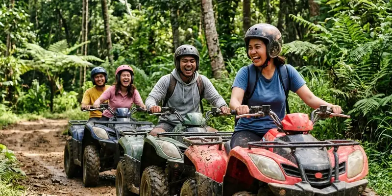

Malang Skyland adalah wisata baru Batu berkonsep ketinggian dengan sky bridge kaca dan panorama 360 derajat di kawasan Karangploso, Malang.
Ringkasan Inti
- Malang Skyland resmi beroperasi sejak 21 April 2023 di Desa Tawangargo, Kecamatan Karangploso, Kabupaten Malang.
- Lokasinya sekitar 8 km dari alun-alun Kota Batu dan 16 km dari pusat Kota Malang, dapat ditempuh sekitar 30 menit.
- Daya tarik utama berupa sky bridge kaca sepanjang sekitar 200 meter dan wahana skynet berupa bean bag di atas jaring tali.
- Harga tiket masuk terjangkau, mulai dari Rp15.000 untuk balita hingga Rp35.000 untuk dewasa.
- Tempat ini cocok untuk wisata keluarga, konten media sosial, dan pencari spot foto ketinggian.
Apa Itu Malang Skyland?
Malang Skyland adalah destinasi wisata modern yang mengusung konsep ketinggian dengan panorama 360 derajat, dipadukan dengan elemen teknologi hiburan masa kini. Tempat ini dikembangkan oleh Zafir Land Group, sebuah kelompok usaha pariwisata yang berbasis di Bandung, dan mulai beroperasi untuk umum pada 21 April 2023.
Konsep yang diusung sering disebut sebagai perpaduan teknologi hiburan generasi baru dengan keindahan alam pegunungan Malang. Wisatawan diajak menikmati pemandangan lembah dan perbukitan dari ketinggian, sekaligus berfoto di berbagai spot yang dirancang instagramable. Karena masih tergolong baru, Malang Skyland kerap disebut sebagai salah satu wisata baru Batu yang mulai naik daun di kalangan wisatawan Malang Raya, meskipun secara administratif lokasinya berada di wilayah Kabupaten Malang, bukan di dalam Kota Batu.
Bagi wisatawan yang terbiasa mengunjungi kawasan Batu, Malang Skyland menjadi pilihan tambahan karena jaraknya yang relatif dekat dari pusat kota tersebut, sehingga sering dimasukkan dalam satu rangkaian perjalanan wisata Batu-Malang.
Dimana Lokasi Malang Skyland?
Malang Skyland berlokasi di Desa Tawangargo, Kecamatan Karangploso, Kabupaten Malang, Jawa Timur, sekitar 8 km dari alun-alun Kota Batu.
Secara administratif, lokasi ini berada di wilayah Kabupaten Malang, tepatnya di kawasan Karangploso yang berbatasan dengan wilayah Kota Batu. Posisi ini membuat Malang Skyland mudah dijangkau baik dari arah Kota Batu maupun dari pusat Kota Malang. Jarak dari pusat Kota Malang diperkirakan sekitar 16 km, sementara dari alun-alun Kota Batu hanya sekitar 8 km, dengan waktu tempuh kurang lebih 30 menit menggunakan kendaraan pribadi dalam kondisi lalu lintas normal.
Kawasan Karangploso sendiri dikenal memiliki udara sejuk khas dataran tinggi Malang Raya, sehingga mendukung konsep wisata ketinggian yang diusung Malang Skyland. Kondisi geografis berbukit di sekitar lokasi juga menjadi alasan mengapa tempat ini dapat menawarkan pemandangan 360 derajat kepada pengunjung.
Sejarah Singkat dan Konsep Malang Skyland
Malang Skyland dibangun oleh Zafir Land Group dan resmi dibuka untuk umum pada 21 April 2023 sebagai destinasi wisata ketinggian di Malang Raya.
Sejak awal dikembangkan, Malang Skyland dirancang untuk menyasar segmen wisatawan yang mencari pengalaman visual dan spot foto baru, bukan sekadar wisata alam konvensional. Konsep yang diusung memadukan struktur bangunan modern seperti jembatan kaca dan area duduk di atas jaring tali dengan latar belakang alam pegunungan Malang yang masih asri.
Sebagai pendatang baru di peta wisata Malang Raya, Malang Skyland bersaing dengan destinasi ketinggian lain yang sudah lebih dulu populer di kawasan Batu, seperti taman langit dan berbagai spot foto berbasis panorama pegunungan. Meski demikian, keberadaan sky bridge sepanjang sekitar 200 meter menjadi salah satu pembeda utama yang ditonjolkan Malang Skyland dibandingkan destinasi sejenis.
Berapa Harga Tiket Masuk Malang Skyland?
Harga tiket masuk Malang Skyland tergolong terjangkau, mulai dari Rp15.000 untuk balita, Rp25.000 untuk anak-anak, dan Rp35.000 untuk pengunjung dewasa.
Struktur harga tiket ini dibagi berdasarkan kategori usia pengunjung, dengan tarif termurah untuk balita dan tarif tertinggi untuk kategori dewasa. Harga tersebut umumnya sudah mencakup akses masuk ke area utama dan beberapa spot foto, namun beberapa wahana tambahan seperti aktivitas ATV biasanya dikenakan biaya terpisah di luar tiket masuk dasar.
Karena harga tiket dan kebijakan wahana tambahan dapat berubah sewaktu-waktu mengikuti kebijakan pengelola, disarankan untuk mengecek informasi terbaru melalui kanal resmi atau media sosial Malang Skyland sebelum berkunjung, terutama jika berencana datang pada musim liburan.
Jam Operasional Malang Skyland
Malang Skyland buka setiap hari dengan jam operasional yang berbeda antara hari kerja dan akhir pekan untuk menyesuaikan volume kunjungan wisatawan.
Pada hari kerja, Malang Skyland umumnya beroperasi mulai pukul 10.00 hingga 20.00 waktu setempat. Sementara itu, pada akhir pekan jam operasional diperpanjang, yaitu mulai pukul 09.00 hingga 21.00, mengingat volume kunjungan yang biasanya lebih tinggi pada Sabtu dan Minggu.
Jam operasional yang lebih panjang di akhir pekan juga memberi keleluasaan bagi wisatawan untuk menikmati suasana sore hingga malam hari, terutama saat lampu-lampu di sekitar kawasan Batu mulai menyala dan menambah keindahan panorama dari ketinggian.

Lanskap perbukitan hijau dan udara sejuk pegunungan Karangploso menyempurnakan pengalaman liburan di Malang Skyland.
Wahana dan Aktivitas Utama di Malang Skyland
Wahana utama Malang Skyland adalah sky bridge kaca sepanjang sekitar 200 meter dan skynet berupa bean bag di atas jaring tali dengan latar panorama pegunungan.
Sky bridge menjadi daya tarik paling ikonik karena memungkinkan pengunjung berjalan di atas jembatan kaca sambil menikmati pemandangan lembah dan perbukitan di sekitarnya. Selain itu, wahana skynet menawarkan pengalaman duduk santai di atas bean bag berwarna cerah yang diletakkan di atas jaring tali, cocok untuk bersantai sambil menikmati udara sejuk khas Malang Raya.
Selain dua wahana utama tersebut, Malang Skyland juga menyediakan aktivitas berkendara ATV di jalur khusus yang telah disiapkan pengelola, sehingga pengunjung yang menyukai aktivitas fisik dan sensasi adrenalin memiliki pilihan tambahan selain menikmati pemandangan secara pasif.
Bagaimana Rute Menuju Malang Skyland dari Batu?
Rute menuju Malang Skyland dari Kota Batu dapat ditempuh melalui Jalan Ir. Soekarno atau jalur utama Malang-Batu, dilanjutkan menuju arah Karangploso.
Dari pusat Kota Batu, wisatawan dapat mengikuti Jalan Ir. Soekarno yang merupakan jalur utama penghubung Batu dan Malang. Setelah melewati pertigaan di sekitar Polsek Pendem, arah perjalanan berbelok menuju Jalan Moh. Hatta menuju kawasan Karangploso hingga sampai ke lokasi Malang Skyland di Desa Tawangargo. Perjalanan ini umumnya memakan waktu sekitar 30 menit tergantung kondisi lalu lintas.
Bagi wisatawan yang belum familiar dengan rute ini, penggunaan aplikasi navigasi dengan titik lokasi Malang Skyland di Karangploso sangat disarankan agar tidak tersesat, mengingat beberapa jalan menuju lokasi berada di kawasan pedesaan dengan penunjuk arah yang terbatas.
Fasilitas yang Tersedia di Malang Skyland
Malang Skyland menyediakan fasilitas dasar berupa area parkir kendaraan yang luas, toilet, mushola, serta kafe dengan dinding kaca dan area outdoor.
Fasilitas parkir yang luas mendukung kunjungan rombongan maupun kendaraan pribadi, sementara ketersediaan mushola memudahkan pengunjung muslim untuk beribadah selama berwisata. Kafe dengan dinding kaca menjadi nilai tambah karena pengunjung tetap dapat menikmati pemandangan sekitar sambil bersantai dan menikmati makanan atau minuman.
Kombinasi fasilitas dasar dan area outdoor yang nyaman ini membuat Malang Skyland relatif ramah untuk kunjungan keluarga, termasuk yang membawa anak-anak atau lansia, meskipun beberapa wahana ketinggian tetap memerlukan kehati-hatian ekstra.
Tips Berkunjung ke Malang Skyland
Sebaiknya datang pada pagi atau sore hari di luar jam puncak, membawa alas kaki nyaman, serta mengecek cuaca terlebih dahulu sebelum berkunjung ke Malang Skyland.
Karena berada di kawasan berbukit dengan udara sejuk, cuaca dapat berubah cepat, terutama menjelang sore. Membawa jaket tipis dan alas kaki yang nyaman untuk berjalan di area sky bridge maupun sekitar kawasan outdoor sangat disarankan. Datang di luar jam ramai, misalnya pagi hari pada hari kerja, juga dapat membantu menghindari antrean panjang di wahana utama seperti sky bridge dan skynet.
Bagi yang membawa anak-anak, penting untuk tetap mendampingi mereka selama berada di area ketinggian dan mengikuti arahan petugas setempat demi keamanan bersama.
Kesalahan Umum yang Perlu Dihindari
Kesalahan umum saat berkunjung ke Malang Skyland antara lain datang tanpa mengecek jam operasional terbaru dan mengabaikan potensi antrean pada akhir pekan.
Beberapa wisatawan datang tanpa memastikan jam operasional terkini, padahal jam buka dapat berbeda antara hari kerja dan akhir pekan, atau berubah sewaktu-waktu mengikuti kebijakan pengelola. Kesalahan lain adalah tidak memperhitungkan waktu tempuh dan kondisi jalan menuju lokasi yang berada di kawasan pedesaan, sehingga sebagian pengunjung tiba lebih lambat dari perkiraan.
Selain itu, banyak pengunjung yang tidak mempersiapkan pakaian sesuai cuaca sejuk khas dataran tinggi, sehingga kurang nyaman selama berada di area outdoor dalam waktu lama.
Kesimpulan
Malang Skyland layak dipertimbangkan sebagai wisata baru Batu bagi pengunjung yang mencari pengalaman ketinggian dengan sky bridge kaca dan panorama 360 derajat di kawasan Karangploso, Malang. Untuk perencanaan yang lebih matang, wisatawan dapat mempelajari lebih lanjut mengenai harga tiket dan jam buka Malang Skyland terbaru, mengenal lebih dalam wahana dan aktivitas seru di Malang Skyland, serta menyimak panduan lengkap rute menuju Malang Skyland dari Kota Batu sebelum berangkat.
FAQ Malang Skyland
Malang Skyland secara administratif berada di Kabupaten Malang, tepatnya di Karangploso, namun jaraknya sangat dekat dengan Kota Batu sehingga sering dianggap sebagai bagian dari wisata kawasan Batu-Malang.
Harga tiket masuk Malang Skyland bervariasi menurut usia, yaitu sekitar Rp15.000 untuk balita, Rp25.000 untuk anak-anak, dan Rp35.000 untuk dewasa, di luar biaya wahana tambahan seperti ATV.
Wahana paling terkenal di Malang Skyland adalah sky bridge kaca sepanjang sekitar 200 meter dan skynet berupa bean bag di atas jaring tali dengan pemandangan 360 derajat.
Waktu tempuh dari pusat Kota Batu menuju Malang Skyland sekitar 30 menit melalui Jalan Ir. Soekarno dan Jalan Moh. Hatta menuju Karangploso.
Malang Skyland cukup ramah untuk keluarga karena tersedia fasilitas dasar seperti toilet, mushola, dan area duduk, namun tetap diperlukan pendampingan ekstra pada wahana ketinggian seperti sky bridge dan skynet.